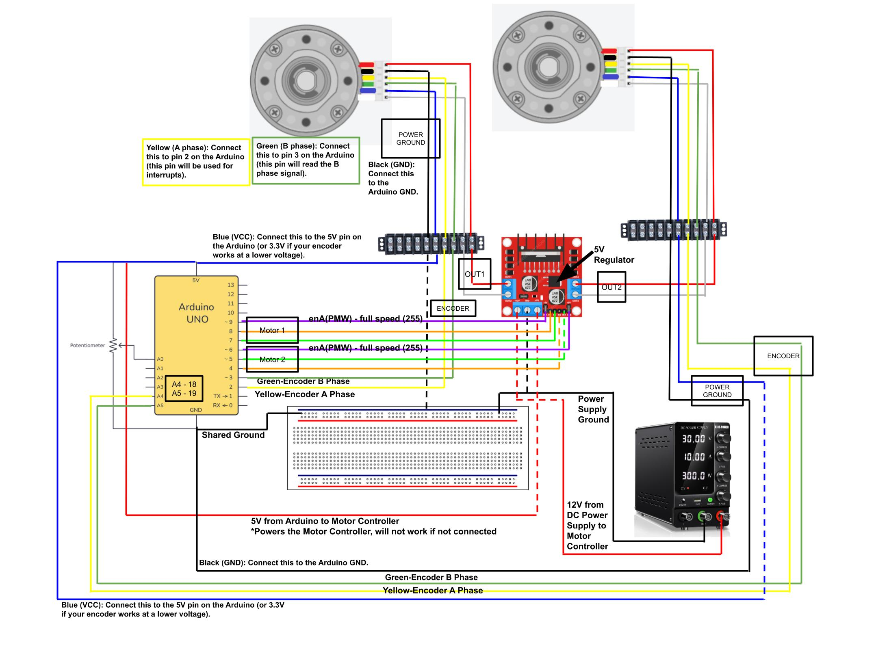
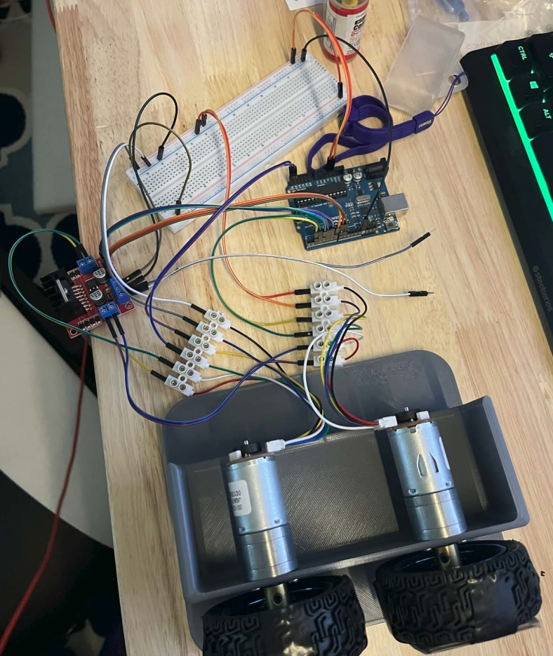
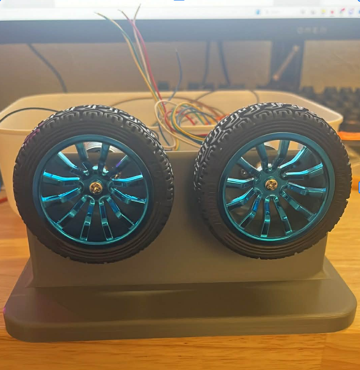
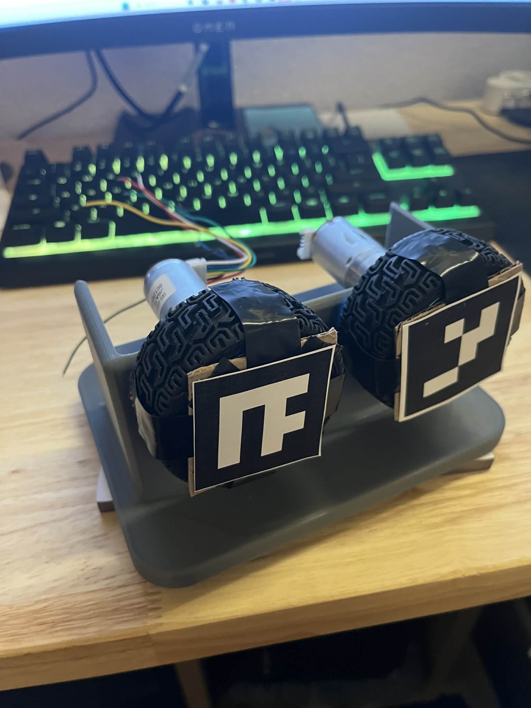
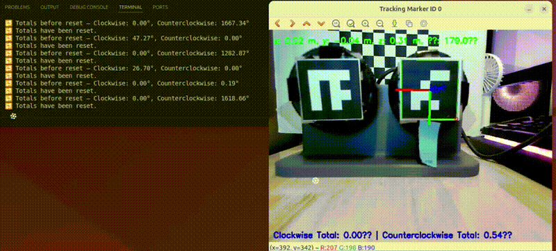
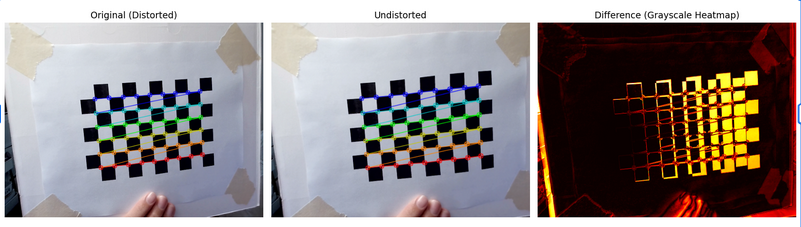

DIY Differential Drive Robot
An in-progress custom robot platform built from individual components to better understand low-level motor control, encoder feedback, calibration, and future ROS 2 integration.

Project Overview
This project started as a way to build a robot from the ground up rather than relying on a fully assembled platform. The main goal has been to understand how each subsystem works at a lower level: Arduino motor control, DC motor behavior, encoder pulse counting, calibration, and hardware-to-software communication.
Instead of only focusing on the final robot, I have been developing the project in stages. That has included gathering the hardware, building wiring diagrams, testing individual motors, validating encoders in both directions, and creating a computer vision-based method to measure wheel rotation independently.
The long-term goal is to connect this system to a Raspberry Pi, move the project into ROS 2, and create the ROS 2 drivers and nodes needed to make the robot operate as a complete mobile robotics platform.
What Was Built
- Arduino-based DC motor control for a differential drive robot platform
- Encoder pulse counting and direction validation for clockwise and counterclockwise motion
- Single-motor and multi-motor testing workflows
- Time-based and pulse-based encoder calibration experiments
- OpenCV + ArUco optical encoder validation workflow using a webcam
- Camera calibration pipeline using a 9x6 checkerboard grid
- Wiring schematic for Arduino, L298N motor driver, motors, encoders, breadboard, and power supply
Hardware Used
- Arduino Uno
- Two 12V DC motors with encoders
- L298N motor controller (dual H-bridge motor driver)
- 12V DC power supply
- Large breadboard
- Webcam for optical tracking
- Custom-built motor test rig
Motor Control and Wiring
The drivetrain is based around two DC motors controlled through an L298N motor controller. The project uses PWM for speed control and dedicated Arduino pins for motor direction control.
Motor A → OUT1, OUT2 Motor B → OUT3, OUT4 IN1, IN2 → Arduino pins 7 and 8 IN3, IN4 → Arduino pins 4 and 5 ENA, ENB → Arduino pins 9 and 10
I also created a full wiring schematic for the larger robot setup that includes two motors, one motor driver, one Arduino Uno, one large breadboard, and a 12V DC power supply. The schematic also shows where the encoder wires connect back to the Arduino.


Encoder Testing
A major part of the project has been understanding how to read encoder pulses accurately and how those pulse counts relate to real wheel rotation. I tested encoder behavior by running the motors at different speeds and checking how many encoder counts were generated over time.
I also explored what baud rate was needed to monitor encoder values reliably over serial output while the motor was running. This was useful for understanding whether the observed counts were stable, whether pulses were being missed, and how readable the data stream was during live testing.
For early debugging, I simplified the setup to a single motor and encoder test configuration:
Black (GND) → Arduino GND Blue (VCC) → 5V Yellow (A) → Arduino pin 2 Green (B) → Arduino pin 3
In this setup, the encoder channels were used to test pulse counting, determine wheel direction, and validate behavior for both clockwise and counterclockwise motion.
Encoder Calibration
I explored different ways to calibrate the encoders and estimate pulses per revolution. One method was to continuously run the motor and count pulses until reaching a target value such as 360 counts, then compare that result to the physical amount of wheel rotation observed.
Another method was time-based calibration, where the motor is run for a fixed amount of time at a known speed or PWM value and the resulting encoder counts are compared across repeated tests. This helped with understanding repeatability and the relationship between commanded motor output and measured encoder feedback.
Optical Encoder Validation with ArUco
To create an independent validation method, I built a test rig that mounted the motor and wheel in a way that could be tracked by a webcam. I attached an ArUco marker to the rotating system and used OpenCV to detect and estimate its pose in real time.
The final Python script:
- Generates and detects a custom ArUco marker with ID 0
- Tracks the marker pose in real time using a webcam
- Calculates X, Y, and Z marker position
- Calculates marker rotation angle in degrees
- Keeps running totals for clockwise and counterclockwise rotation
- Allows reset of the totals with the spacebar
- Allows the program to quit with q
This optical validation approach gave me a second way to estimate wheel rotation outside of the encoder readings themselves. That made it useful for cross-checking whether the encoder measurements matched actual physical motion.



Camera Calibration
Since the optical tracking depends on accurate pose estimation, I calibrated the webcam using a standard checkerboard workflow with a 9x6 corner grid. This process produced the camera matrix and distortion coefficients used in the ArUco tracking code.
I also generated calibration visuals showing the original image, the undistorted image, and a difference heatmap to verify that the correction was working properly.

Code Repositories
Arduino Control and Encoder Testing
The Arduino-side code is stored in: arduino_project_2025
This repository includes work related to:
- Single motor testing
- Encoder tuning
- General Arduino DC motor control
- PID control and testing experiments
Computer Vision and Calibration
The computer vision and calibration code is stored in: ubuntu_22_04_workspace
This workspace includes:
- ArUco tag generation
- Optical encoder tracking code
- Camera calibration code
- Supporting scripts for computer vision-based validation
System Pipeline Understanding
Arduino Uno → L298N motor driver → DC motors DC motors → encoder pulses → Arduino interrupt handling Webcam → OpenCV / ArUco tracking → optical rotation measurement Future: Arduino + sensors → Raspberry Pi → ROS 2 nodes / drivers → full robot system
Key Engineering Insights
- Low-cost robot hardware still requires careful validation before higher-level autonomy is possible
- Encoder pulse counts are only useful if they can be tied back to real physical wheel rotation
- Testing one subsystem at a time makes debugging much easier than trying to assemble everything at once
- Computer vision can be used as a practical external reference for encoder validation
- Hardware-to-software communication is not automatic and must be designed intentionally
What I Learned
- How to wire and control DC motors through an Arduino and motor driver
- How to read encoder pulses and reason about direction and counts
- How to approach encoder calibration through both direct and indirect methods
- How to use camera calibration and ArUco pose estimation for robotics measurement tasks
- How to break a larger robotics project into smaller validation steps before integration
Current Status
This project is still in progress. I have gathered most of the hardware, built and tested several parts of the system, and created working code for motor control, encoder testing, optical validation, and camera calibration.
The full robot is not yet assembled into its final form, and I have since taken apart parts of the hardware setup after testing. Even so, the project already reflects meaningful engineering work because it documents the development process, debugging approach, and validation methods used to build toward a complete mobile robot.
Next Steps
- Rebuild the physical robot platform
- Validate both motors and encoders together under the same workflow
- Connect the Arduino system to a Raspberry Pi
- Create ROS 2 drivers and nodes for command and feedback
- Use encoder feedback as a foundation for odometry and higher-level robotics software
Why This Matters
This project shows the kind of robotics work that happens before autonomy demos, navigation stacks, or polished final robots. It focuses on the foundational engineering required to make a custom robot actually measurable, debuggable, and extensible.
By working through encoder behavior, motor control, wiring, optical validation, and camera calibration first, I am building the lower-level understanding needed to later integrate the system into ROS 2 and scale it into a more complete robotics platform.
GitHub Repositories
Arduino Project Repository
Ubuntu 22.04 Workspace Repository